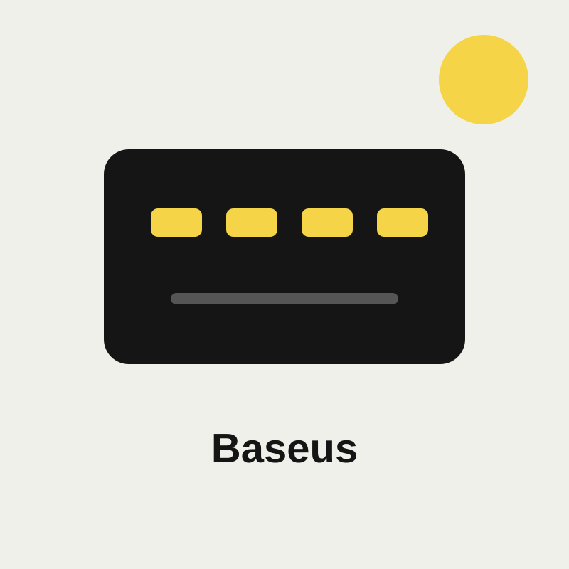

محور UGREEN USB-C 7 في 1
منتج متوفر ضمن كتالوج CABL، راجع المواصفات والتوافق قبل إتمام الطلب.
اكتشف اكسسوارات الجوال والموبايل التي تكمل الشحن والعمل والسفر، من محاور USB-C إلى حوامل السيارة ومنتجات العلامات الأصلية.
تصفح كتالوج CABL
منتج متوفر ضمن كتالوج CABL، راجع المواصفات والتوافق قبل إتمام الطلب.
منتج متوفر ضمن كتالوج CABL، راجع المواصفات والتوافق قبل إتمام الطلب.
منتج متوفر ضمن كتالوج CABL، راجع المواصفات والتوافق قبل إتمام الطلب.
تحقق من نوع المنفذ والقدرة بالواط ومعيار الشحن السريع والتوافق مع هاتفك. لا تعني القدرة الأعلى أنها مناسبة لكل جهاز؛ اتبع مواصفات الهاتف والكابل، واختر منتجًا أصليًا من علامة موثوقة.
يعرض CABL معلومات المنتج وخيارات الشحن المتاحة أثناء إتمام الطلب. يمكنك طلب شاحن جوال أونلاين والتواصل مع فريق CABL للتأكد من التوصيل إلى مدينتك في اليمن.